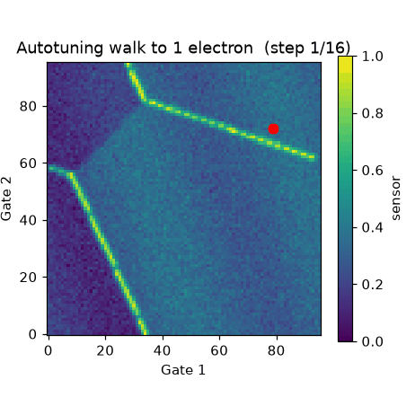
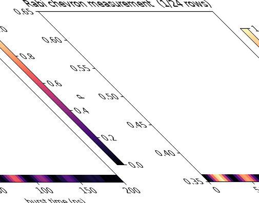
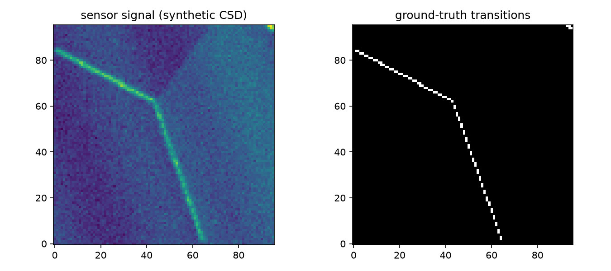
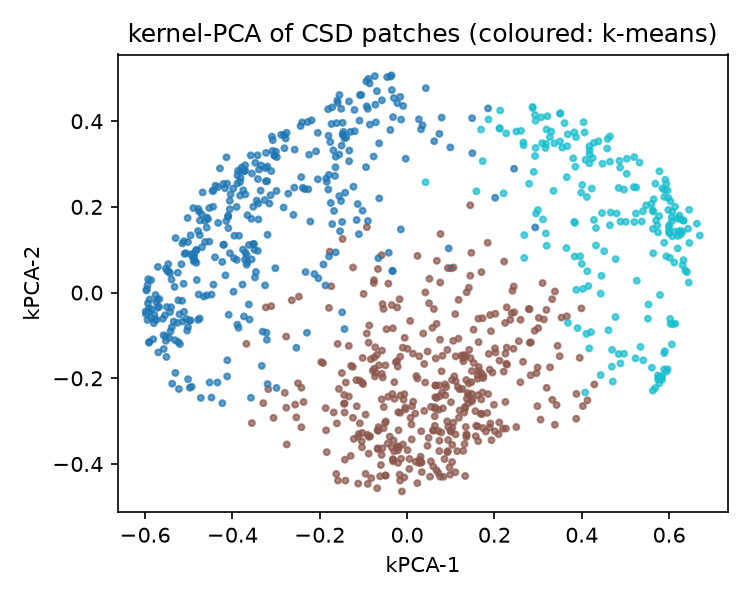

Every quantum-dot chip must be tuned voltage-by-voltage to trap exactly one electron per dot — by hand, that takes weeks. This repo is the complete automated answer: neural networks that read charge diagrams, a closed-loop walker that finds the single electron, clustering that reveals which chips are hard, and Hamiltonian fitting that calibrates the qubit. One command reproduces every number.
Line-detection AUC — the network almost never mistakes a transition (verified, device-grouped CV).
Closed-loop autotuning success on clean data, paired verify on/off ablation included.
Mean g-factor error over 40 random qubits via Rabi-chevron Hamiltonian learning.
Public-data manifest verified at run time: QDSD · NIST QFlow · QDarts 1.0.5.
Two animations generated by code (scripts/make_demo.py), not screen recordings. Left: the autotuner walks from many electrons to one. Right: the qubit measurement builds row by row.


Neural nets learn transition lines and charge states from diagram patches (Stage A).
A walker counts line crossings downhill to the single-electron regime, double-checking when unsure (Stage B).
Kernel-PCA + clustering groups patches without labels and flags hard-to-tune chips (Stage C).
Rabi-chevron fits recover g-factor, exchange and coherence time T2* (Stage D).
pip install -r requirements.txt PYTHONPATH=src python scripts/run_all.py # full benchmark, ~1 min cat results/benchmark.json # every number, one file
Docker path: docker compose up qdotml · Tests: docker compose run test · Demos: PYTHONPATH=src python scripts/make_demo.py


| Stage | Metric | Verified value |
|---|---|---|
| A · lines (MLP) | AUC / acc / F1 / ECE | 0.998 / 0.972 / 0.970 / 0.015 |
| A · states | accuracy / F1 | 0.880 / 0.755 |
| B · autotune clean | success (verify on/off) | 61.7% / 61.7% |
| B · autotune 2× noise | success (on/off) | 86.7% / 85.8% |
| C · clustering | ARI / NMI | 0.056 / 0.125 |
| C · hidden pattern | r disorder→success | −0.11 |
| D · Hamiltonian | MAE(g) / MAPE(T2*) | 0.069 / 16.0% |
Synthetic-to-real gap (single sensor model, no barrier dynamics); patch clustering is weak by design on raw patches; budget-success mixes true navigation with lucky stops under noise — reported openly with a stress test. Next: experimental-patch transfer, asymmetry-aware scheduler, narrated video.
git clone <your-fork> && cd qdot-ml-phd-benchmark-2026 pip install -r requirements.txt PYTHONPATH=src pytest -q PYTHONPATH=src python scripts/run_all.py
Publish this page free: GitHub → Settings → Pages → Deploy from branch → open preview.html. Add a narrated MP4 later via a release upload and link it beside the GIFs.